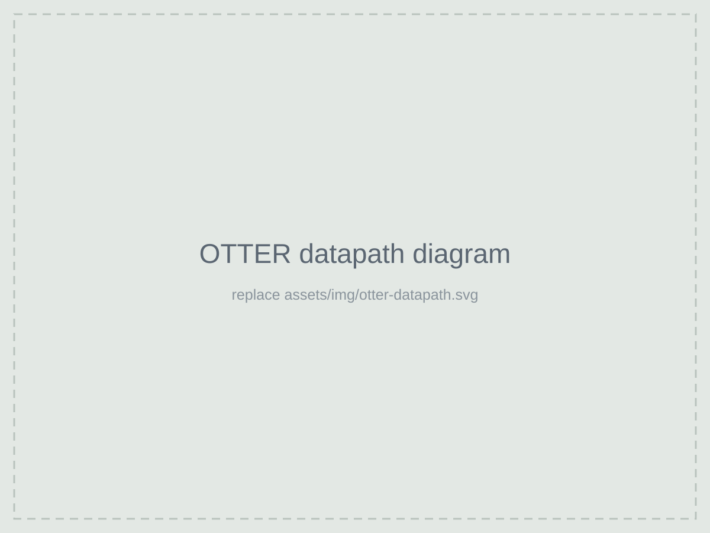
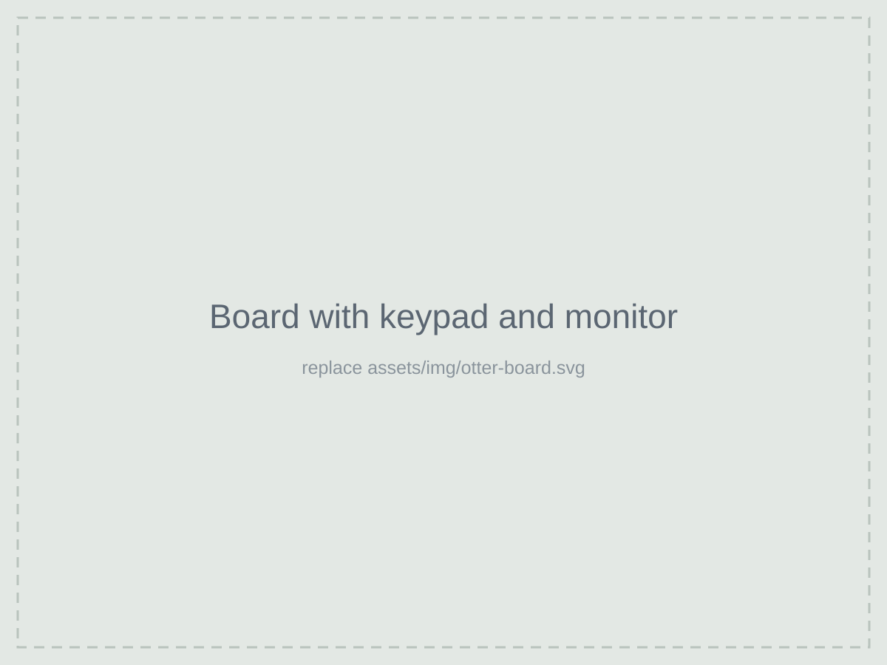

Overview
The OTTER is the RISC-V-based teaching processor at Cal Poly. Over the course I built it up module by module: the ALU, register file, datapath, and the control unit that decodes instructions and sequences everything else.
What I built
- The CPU. A modular SystemVerilog design with a separate datapath, control unit and ALU, each tested on its own before being put together.
- Software. A custom instruction set and assembly language, and the game program written in it.
- I/O. VGA output and keypad input wired into the processor so the game could run with no computer attached.
- The game. Whack-A-Mole, running entirely on hardware I designed.

